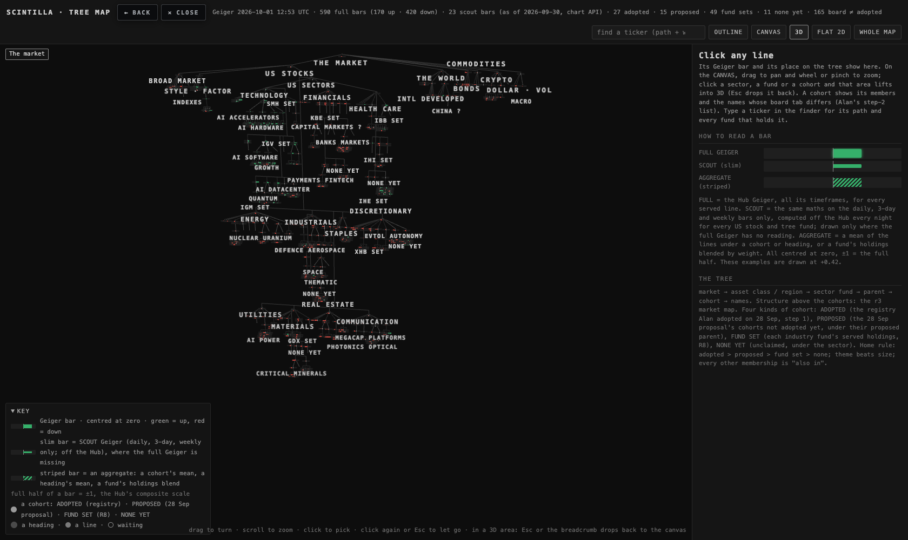
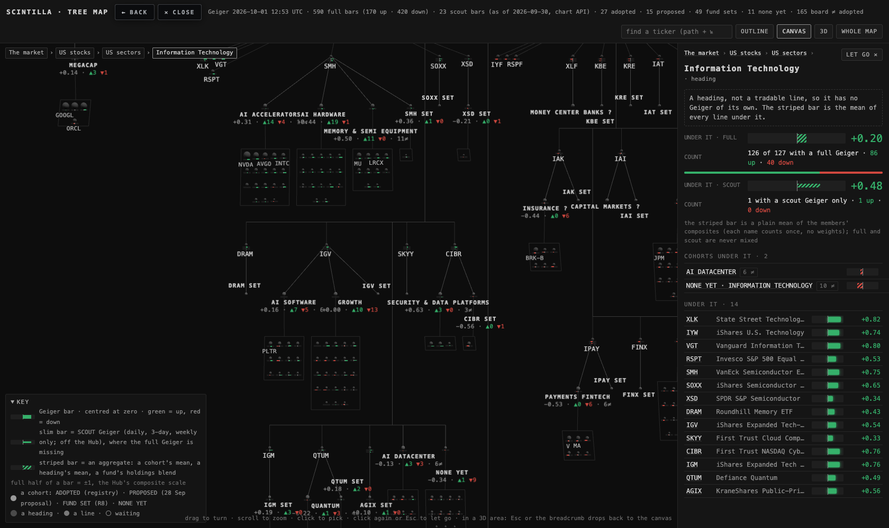
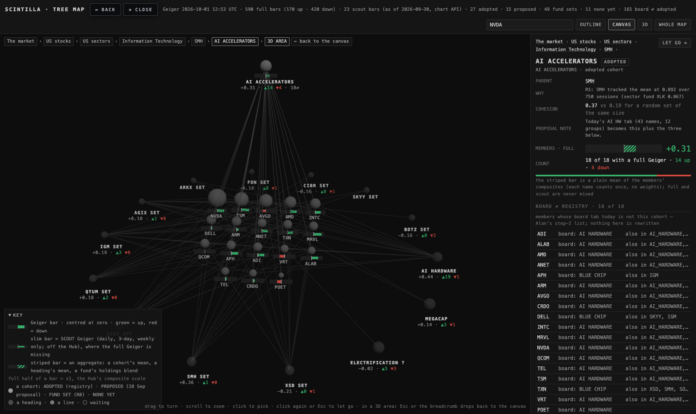
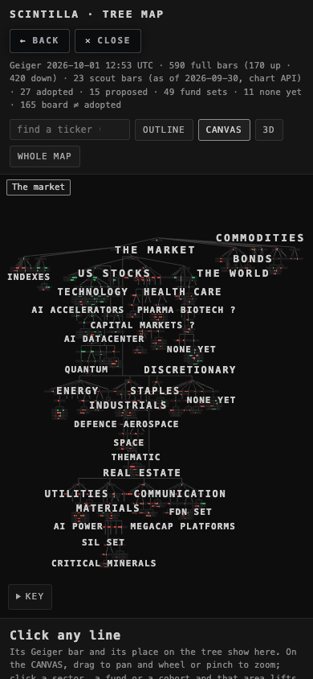
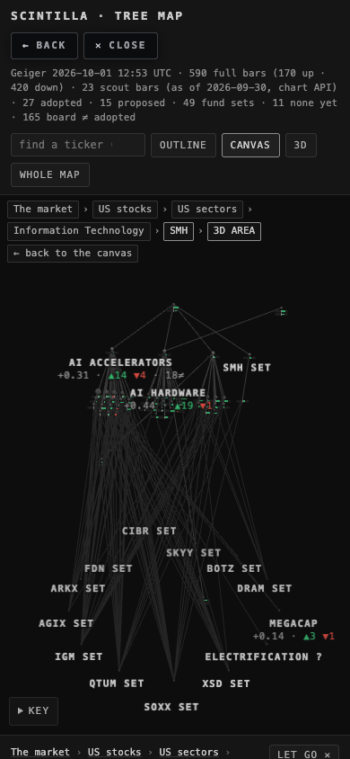
One tree, read from the top down: the market → asset class or region → sector fund → the registry parent → cohort → names. Every tradable line on it (a fund or a name) carries a Geiger bar, and every cohort and heading carries the mean of the lines under it with an up/down count. There are two ways to look at the same tree:
The finder (top right) takes a ticker and answers with its path, market → … → cohort → name, and every fund that holds it with its weight. ?t=NVDA in the address does the same.
The 28 Sep market map (market-map-r3) is untouched: this is a new page beside it.
Alan opened the canvas on his Mac and the labels sat on a different plane from the balls and lines. The cause: on a scale-2 (Retina) screen the drawing buffer was made twice the CSS size, but the canvas element was never told its CSS size, so it took its buffer size as its CSS size — the picture spilled out of its box to the right and down while the labels, projected in CSS pixels, stayed where the box said. At scale 1 the two sizes are the same, so nothing showed.
Fixed: the canvas's CSS size is always the box's; the drawing buffer is CSS × the device scale (1, 1.5, 2, 3); the pixel ratio is set at start and again on every resize, and once a second if the window moves to a screen with another scale; every label is projected in CSS pixels from that same size. The same code draws the canvas, the whole-market 3D and a lifted area, so all three are covered. On open the canvas fits the whole tree in view. The hint line now reads "drag to pan · scroll to zoom · click an area to lift it into 3D" on the canvas and "drag to turn …" in the 3D.
| run | box (CSS px) | canvas CSS | buffer | labels off their node, sideways |
|---|---|---|---|---|
| before · 1680 · scale 2 | 1280 × 918 | 1920 × 1377 | 1920 × 1377 | 0 px to the projected point, but the picture itself was drawn 1.5× too large |
| after · 1680 · scale 2 | 1280 × 918 | 1280 × 918 | 2560 × 1836 | 0 px |
| after · 1680 · scale 1 | 1280 × 918 | 1280 × 918 | 1280 × 918 | 0 px |
| after · 390 · scale 2 | 390 × 523 | 390 × 523 | 780 × 1046 | 0 px |
| after · 390 · scale 1 | 390 × 523 | 390 × 523 | 390 × 523 | 0 px |
The navigation run (canvas, pan, finder to Information Technology, wheel zoom, SMH lifted, back, finder with NVDA, the whole 3D) was made at scale 1 and 2, at 1680 and 390; in every shot the proof read back the canvas's box, CSS size and buffer and every printed label against its ball. shots/nav-proof.json holds the four runs and tests/tree-map-canvas.test.mjs checks all of it: CSS = box, buffer = CSS × scale, labels within pixels, pose restored after back.
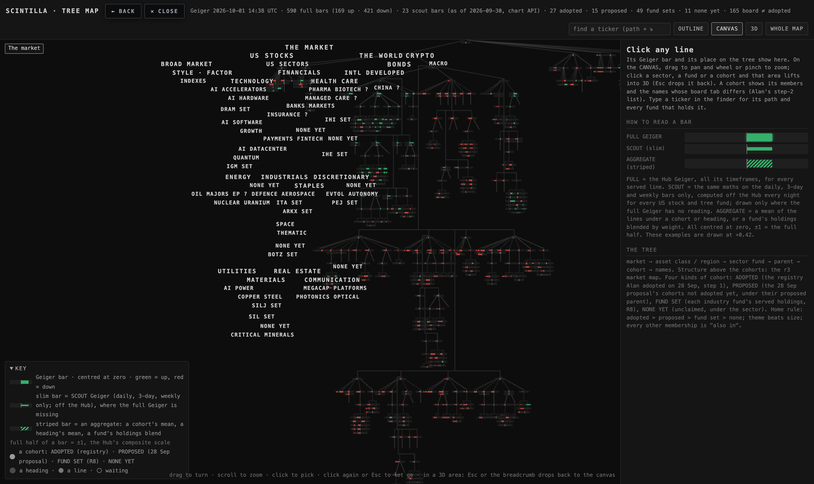
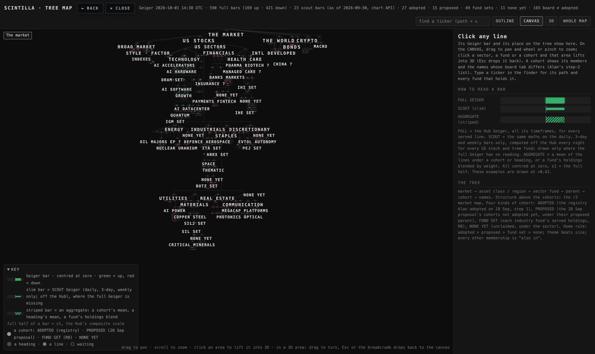
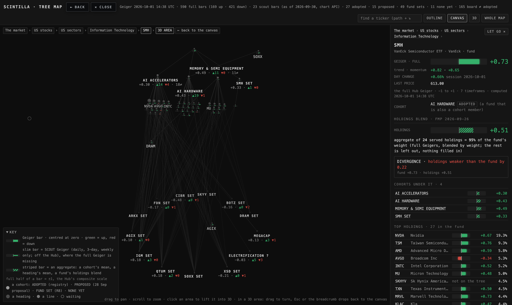
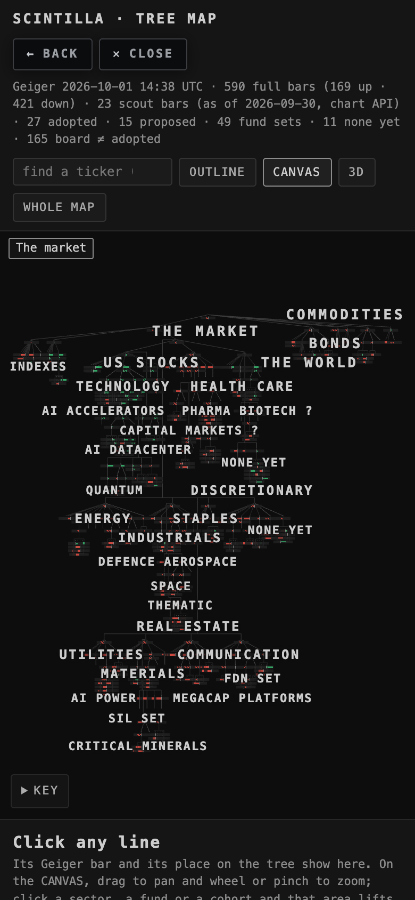
Could be wrong (T4): the buffer is now the full device scale (capped at 3), so a 5K screen draws four times the pixels of before on the whole-market view; the page still draws only while something moves. The headless proof uses software GL, where the pixel count costs more than on a real GPU.
Alan, 1 Oct: "How it was presented in 3D, I loved it. I just wanted it flat so that I can zoom into a specific area, then I click in one area, and then it's a 3D… like an Obsidian canvas." The boxed LAYERS map of 30 Sep is removed (button, code, tests).
| view | what it is | how you move |
|---|---|---|
| CANVAS (desktop default) | The same tree as the whole-market 3D — the same balls, bars, labels and connecting lines, drawn by the same module from the same layout — laid on one flat plane (the tree's own flat layout, the camera straight on). Zoomed out it shows the market, the asset classes, the sectors, the funds and the cohorts (all four kinds, marked); names appear as you zoom into an area. A label sits under its ball. Nothing is boxed and nothing rotates. | drag pans; wheel and pinch zoom toward the pointer; the finder flies to a ticker's place; the breadcrumb says where you are. |
| 3D AREA (click an area) | a sector, a fund that parents cohorts, or a cohort lifts into the 3D view of just that subtree, placed by the tree's own 3D layout, with its own balls, bars and lines, plus a faint line from every name to each other cohort or fund set it is also in (at most 30 neighbours, adopted cohorts first). The funds that hold a name stay on the card. | orbit is allowed inside the area; Esc, "← back to the canvas" on the breadcrumb, or WHOLE MAP drops back to the canvas at the same spot and zoom. |
| 3D (one button away) | the whole market in 3D, as before. | as before. |
| OUTLINE (phone default) | unchanged. | unchanged. |
Proof (headless, 1680 and 390, examined): a navigation run — the canvas whole (framed straight on, beside the whole-market 3D framed the same way for comparison), a pan, the finder to Information Technology, six wheel clicks toward the pointer, SMH's area lifted into 3D (54 nodes: SMH, its three cohorts, 46 names, 13 neighbouring cohorts and fund sets), back, the finder with NVDA, then the AI ACCELERATORS area. In every shot the proof read back every printed label against its ball: sideways offset 0 px; vertically within the ball's own label slot; no label cut. After "back" the camera pose was the one recorded before the lift, to the decimal, and rotation was locked again. The run is saved as shots/nav-proof.json and tests/tree-map-canvas.test.mjs reads it.





Could be wrong (T3): on the canvas a ball's label appears only once the ball is a few pixels wide, so at the whole-market zoom the names are unlabelled dots under their cohorts (as in the 3D); zoom in and they print. A click on a ball lifts it; a drag of more than six pixels is a pan, not a click. The area's neighbours are capped at 30. The area's 3D arrangement is the tree's: a big sector (Technology, 126 lines) lifts as a wide block.
Alan, 29 Sep: "the tree maps down to my adopted cohorts and other cohorts I have not adopted, of course, right? It's going to lead us to more cohorts." The cohort level now holds four kinds, each node tagged and each kind counted on a strip above the outline:
| kind | what | nodes | names at home | where it hangs |
|---|---|---|---|---|
| ADOPTED | the 27 registry cohorts (step 1), as before | 27 | 230 | under the registry parent |
| PROPOSED | the 28 Sep proposal's cohorts that are not in the registry: NEOCLOUDS & MINERS, DATACENTER REITS, ELECTRIFICATION, REGULATED UTILITIES, CRYPTO TREASURIES, SPECULATIVE SMALLCAPS, MONEY CENTER BANKS, CAPITAL MARKETS, INSURANCE, OIL MAJORS & E&P, PHARMA & BIOTECH, TOWERS, TELECOM, MANAGED CARE, CHINA. A proposal id that is a registry label, or a rename of one (WORLD = INTL, PHOTONICS = PHOTONICS OPTICAL, PRECIOUS METALS = METALS, INTERNET PLATFORMS = MEGACAP PLATFORMS), is the adopted cohort and is not repeated. The proposal's dissolved list names only registry labels, so it appears as a "PROPOSAL SAYS: dissolve → …" line on those adopted nodes. | 15 | 52 | under the proposed parent (XLE, XLF, IBB, MCHI, …) |
| FUND SET | the 49 automatic fund cohorts (R8): every industry fund's served holdings (names only; a fund is never its own member), with the smallest tracking set and the tracking verdict | 49 | 49 | under the fund itself |
| NONE YET | whatever is still unclaimed | 11 | 145 | under the sector heading |
Home rule (coordinator's call): adopted > proposed > fund set > none; within a kind theme beats size (MEGACAP is the one adopted size bucket: NVDA, TSM, AAPL, AMZN now sit in their theme cohorts and carry MEGACAP as "also in"), then the best tracking (fund sets), then the smallest. Every other membership is "also in", with its kind. 235 names are in more than one cohort.
What a PROPOSED or FUND SET card shows: the members at home there with the mean and ▲/▼, and then WOULD HOLD (or THE WHOLE SET): every member of the proposal or fund set, its mean over all of them, and for each one at home elsewhere, where. So MONEY CENTER BANKS shows 0 at home but "would hold 8", all eight sitting in BANKS MARKETS and PAYMENTS FINTECH today — which is exactly what adopting it would change.
Counts that moved: board ≠ adopted is now 165 (was 162: theme-beats-size moved three names out of MEGACAP, whose board tab is MEGACAP). The 224 served names outside every adopted cohort are unchanged, but 52 of them now have a proposed home and 49 a fund-set home, leaving 145 in NONE YET (was 224). The 104 names admitted on 29 Sep are in no fund set, because the fund sets were measured on the 28 Sep universe.
Screenshots (30 Sep, examined): the counts strip and the outline at 1680 (27 ADOPTED · 230 names · 15 PROPOSED · 52 · 49 FUND SETS · 49 · 11 NONE YET · 145 · 165 board ≠ adopted), MONEY CENTER BANKS opened (proposed, 0 at home, would hold 8), OIL MAJORS & E&P in 3D (15 names, board says BLUE CHIP for all), PAVE SET in 3D (tracking GOOD, smallest set HUBB STLD URI, 9 at home, 10 at home elsewhere), the strip at 390, a proposed cohort at 390, a fund set at 390.
Could be wrong (T1b): the rename detection (a proposal whose single source label is a registry cohort and not its split) is mine; the four renames are listed above so it can be checked. Proposal member lists are served-only and from the 28 Sep universe. A fund set with no served holding with full history (KRE) is an empty node.
| level | source | notes |
|---|---|---|
| the market → regions / asset classes → sector funds → industry funds → names' sectors | the r3 market map's node list (deliverables/20260928/market-map-r3/nodes.json, 29 Sep, 637 nodes, 590 served) | copied, not changed. Same headings, same funds, same FMP holdings (26 Sep). |
| the cohorts, their parents, the merges, the filters | data/cohort-registry-step1.json — the 38 rows the 28 Sep migration wrote to public.cohort_registry: 27 cohorts, 6 merged labels, 5 filters | this is the structure Alan adopted on 28 Sep, step 1. Each cohort hangs under the parent the registry names (e.g. AI ACCELERATORS → SMH, AI POWER → VPU, AI DATACENTER → the Technology heading). A merged label (PRECIOUS METALS → METALS) is not a node; the target says "merged in". A filter (BLUE CHIP, the cap tranches) is a tag on a name, never a node. |
| who is in each cohort | the registry carries no member lists (step 1 moved no name). Members come from the 28 Sep tree work the registry was derived from: coverage-tree.json cohorts[].members, merges folded in; plus the 104 names admitted on 29 Sep by the cohort on their admission row where that is a registry cohort (35 of them; the other 69 say BLUE_CHIP, UTILITIES, COMMS, MATERIALS or REAL_ESTATE, which the registry has no cohort for) | a name in several cohorts (86 of them, e.g. NVDA in AI HARDWARE, AI ACCELERATORS and MEGACAP) sits once, in the smallest of them — the most specific — and lists the broader ones as "also in". So AI ACCELERATORS has its 16 names, and AI HARDWARE keeps the 17 nobody cut out. |
| the board tag | public.tickers.cohort — the 17 tabs the Hub board uses today — read on 30 Sep 00:36 UTC through the same public read the Hub page itself makes (613 rows) | shown on a name only where it differs from the cohort it sits in. Nothing is written back. |
| names in no adopted cohort | — | 246 names (224 served, 22 waiting) are claimed by no registry cohort. Each sits in its sector's NO COHORT YET line, so every served name is on the tree exactly once (a test checks this). These are step-2 material too. |
| bar | what it is | where it comes from | tonight |
|---|---|---|---|
| solid = FULL | the Hub Geiger, all its timeframes | chart API /geiger, live at page load | 590 lines (174 up · 416 down) |
| slim = SCOUT | the same maths on the daily, 3-day and weekly rungs only (40% of the full weight), computed off the Hub every night for every US stock and tree fund. Drawn only where the full Geiger has no reading; the card names it SCOUT and says why (waiting for admission, or served with no reading right now) | chart API /v1/scout-geiger (as of the 29 Sep close), with scout-geiger-snapshot.json next to the page as the fallback; the stamp says which was used | 23 lines: the 24 waiting names and funds (QQEW, IBIT, DOCN, …) minus BDXA, which neither Geiger has |
| striped = AGGREGATE | a cohort's or heading's mean of its members' full composites (each name once, no weights), with the count and ▲/▼; funds: the holdings blend by weight, as on r3. Where members only have scout readings, a separate slim striped bar says SCOUT — full and scout are never mixed | computed on the page from the readings above | 27 cohorts + 12 NO COHORT YET lines + 23 headings |
The Geiger's own scale everywhere: centred at zero, the full half of a bar is ±1. Green = up, red = down, nothing else is coloured.
Alan adopted step 1 (parents and merges) and left step 2 (splits and moves) open. This page does not decide it; it counts it. A served name whose board tab today is not the cohort it sits in is a difference, tagged on the name and counted on the cohort. Tonight:
| cohort | parent | names | funds | board ≠ | the board says |
|---|---|---|---|---|---|
| AI POWER | VPU | 23 | 0 | 23 | UTILITIES 16 · THEMATIC 5 · AI HARDWARE 1 · BLUE CHIP 1 |
| BANKS MARKETS | IYG | 17 | 0 | 17 | BLUE CHIP 17 |
| AI ACCELERATORS | SMH | 16 | 0 | 16 | AI HARDWARE 13 · BLUE CHIP 3 |
| CRYPTO EQUITIES | Crypto heading | 11 | 0 | 11 | CRYPTO 6 · AI HARDWARE 4 · GROWTH 1 |
| MEMORY & SEMI EQUIPMENT | SMH | 10 | 1 | 11 | AI HARDWARE 11 |
| EVTOL AUTONOMY | Discretionary heading | 10 | 0 | 10 | THEMATIC 9 · MEGACAP 1 |
| DEFENCE AEROSPACE | ITA | 9 | 0 | 9 | BLUE CHIP 7 · MEGACAP 1 · THEMATIC 1 |
| MEGACAP PLATFORMS | FDN | 8 | 0 | 8 | GROWTH 5 · BLUE CHIP 1 · THEMATIC 1 · COMMS 1 |
| SPACE | ARKX | 8 | 0 | 8 | THEMATIC 7 · MEGACAP 1 |
| AI SOFTWARE | IGV | 12 | 0 | 6 | GROWTH 6 |
| AI DATACENTER · CRITICAL MINERALS · PAYMENTS FINTECH | heading · REMX · IPAY | 6 each | 0 | 6 each | AI HARDWARE, THEMATIC, BLUE CHIP, MATERIALS, GROWTH |
| COPPER STEEL · NUCLEAR URANIUM · QUANTUM | IYM · URA · QTUM | 4 each | 0 | 4 each | MATERIALS, THEMATIC |
| PHOTONICS · SOLAR · SECURITY & DATA | IYZ · TAN · CIBR | 3 each | 0 | 3 each | AI HARDWARE, THEMATIC, BLUE CHIP, AI SOFTWARE |
| MEGACAP | VUG | 9 | 0 | 2 | AI HARDWARE 2 (NVDA, TSM) |
| MACRO | Dollar · vol heading | 0 | 10 | 2 | METALS 2 (GLD, SLV) |
| GROWTH · AI HARDWARE · METALS · THEMATIC · WORLD · INDEXES | IGV · SMH · GDX · ARKX · headings | 23 · 17 · 10 · 5 · 3 · 0 | 0 · 3 · 5 · 0 · 10 · 9 | 0 | board = registry |
The full list per cohort is on the page: click a cohort, section BOARD ≠ REGISTRY. Every row says what the board tab is and, where the name is in several cohorts, which broader ones.
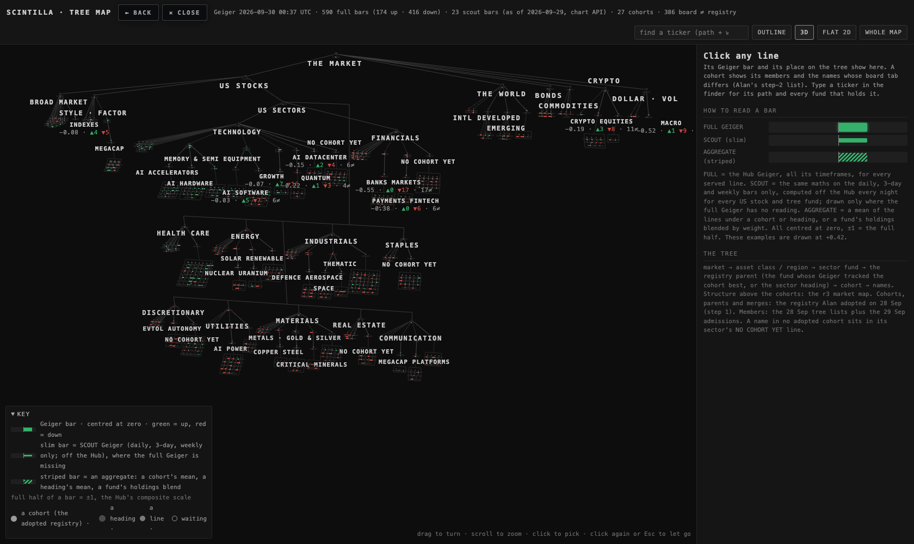
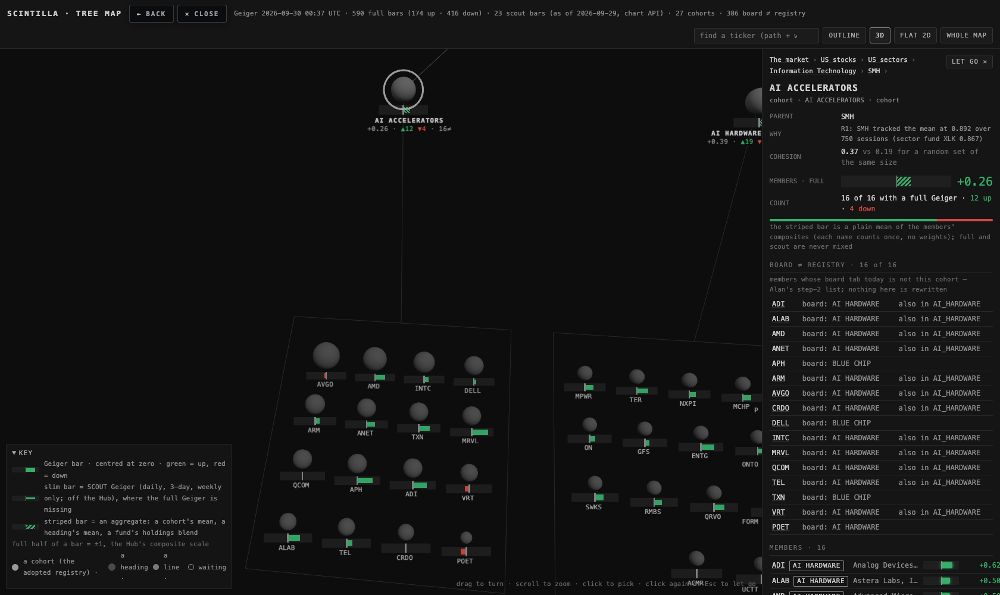
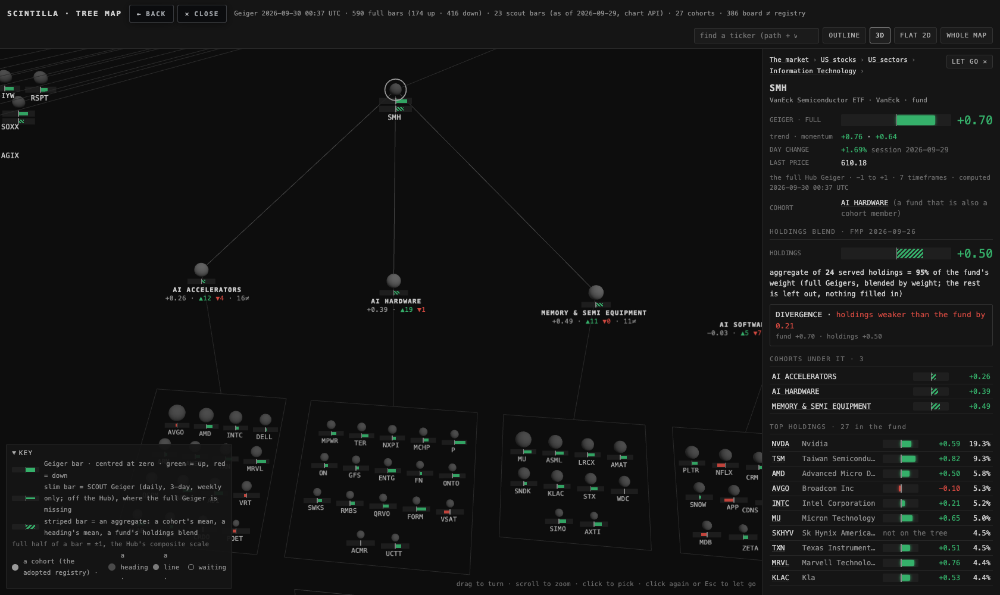
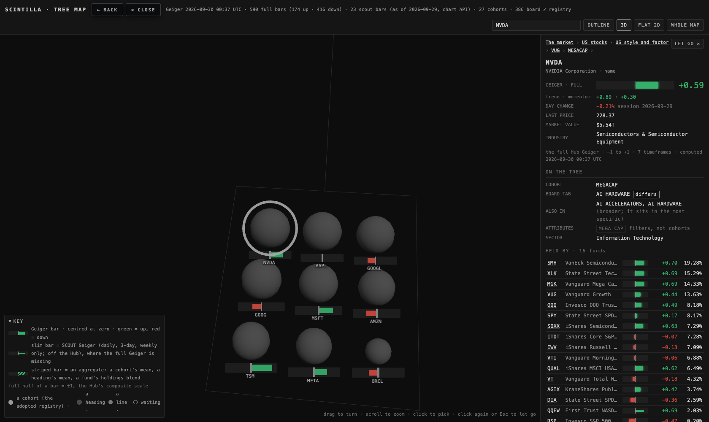

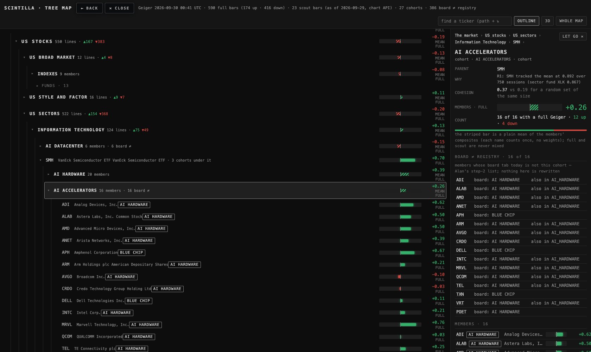
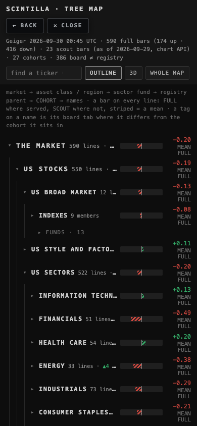
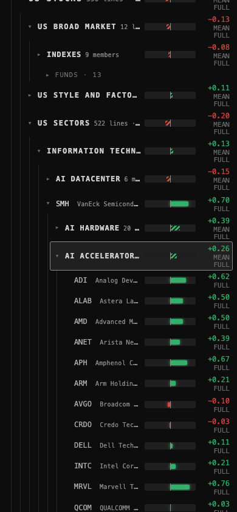
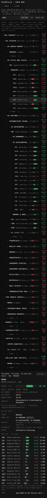
public.cohort_registry could not be read with the Hub's public key (permission denied: no SELECT grant to the anon role). The page uses data/cohort-registry-step1.json, which is the same 38 rows the migration inserted. Worth knowing: any Hub page that later reads the registry from the browser will hit the same wall until the grant is added.node scripts/build-tree-map.mjs to refresh it; the page does not read the board live.tickers.cohort or R2. Did not touch market-map-r3, prototypes/indicator-lab, lab.html or INDICATOR_LAB.deliverables/20260929/tree-map/index.html — the page (outline + finder + card); map3d.js the 3D view; layout.js, aggregate.js copied from r3.deliverables/20260929/tree-map/tree.json — the structure (676 nodes: 23 headings, 138 funds, 27 cohorts, 12 NO COHORT YET lines, 476 names; held_by; provenance). No reading in it.scripts/build-tree-map.mjs — builds tree.json and the scout snapshot. tests/tree-map.test.mjs — 8 tests. proof.mjs — the headless proof.